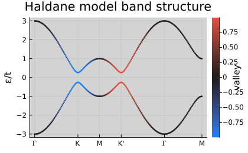
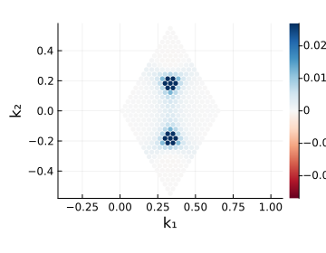
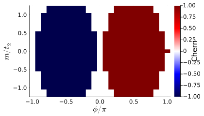
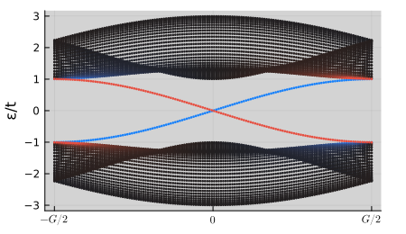
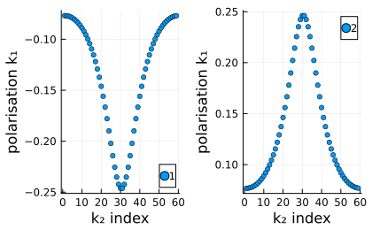

Tutorial 3 — Haldane Model & Topology
Notebook: extra/tutorial/Tutorial3_Haldane.ipynb
Explore how to induce topological gaps in graphene-like systems and compute observables that diagnose Chern insulating phases.
Learning goals
- Introduce complex next-nearest-neighbour hoppings via
Operators.addhaldane!. - Study phase diagrams by sweeping Haldane mass and onsite potentials.
- Evaluate Berry curvature and Chern numbers with
Spectrumutilities. - Visualise chiral edge states on ribbon geometries.
Prerequisites
- Outcomes from Tutorial 2 (band-structure workflows).
- Optional: knowledge of topological band theory terminology.
Workflow outline
- Model setup — Build a honeycomb lattice and baseline graphene Hamiltonian.
- Haldane term — Apply
Operators.addhaldane!(hops, lat, φ; spinhalf=true)and optionally stack with sublattice imbalance. - Parameter scans — Use simple loops or
rangeobjects to inspect phase transitions. Store observables with@saveor by writing CSV/JSON. - Topological invariants — Invoke
Spectrum.chern(hops, ks; ...)or related helpers to compute Chern numbers. - Ribbon perspective — Transform to ribbon geometries (see
extra/examples/graphene/ribbon_haldane.jl) and plot edge-localised states.
Live example
figdir = joinpath(pwd(), "figures")
mkpath(figdir)
nothingcherns = Spectrum.getcherns(hops, 15, 15)
println("Chern numbers (lowest two) = ", cherns[1:2])Chern numbers (lowest two) = [1.0, -1.0]p = plot(
getbands(hops, ks, [valley]);
ylabel="ε/t",
marker=:none,
size=(420, 260),
title="Haldane model band structure",
colorbar=true,
colorbar_title="valley"
)
savefig(p, joinpath(figdir, "haldane_bands.svg"))
nothing
Berry curvature map
kgrid, berry = Spectrum.berry(hops, 20, 20, [1])
vals = filter(!isnan, abs.(berry[:]))
maxval = isempty(vals) ? 1.0 : Statistics.quantile(vals, 0.98)
p = scatter(
(Structure.Lattices.getB(lat) * hcat(reshape(kgrid, :, 1)...))[1, :],
(Structure.Lattices.getB(lat) * hcat(reshape(kgrid, :, 1)...))[2, :];
marker_z = vec(berry),
markerstrokewidth=0,
markersize=3,
colorbar=true,
clims=(-maxval, maxval),
markercolor=:RdBu,
xlabel="k₁",
ylabel="k₂",
size=(360, 280),
legend=false,
aspect_ratio=:equal
)
savefig(p, joinpath(figdir, "haldane_berry.svg"))
nothing
Phase diagram (coarse grid)
using LaTeXStrings
phi_vals = LinRange(-π, π, 25)
m_vals = LinRange(-1.2, 1.2, 25)
h0 = Operators.graphene(lat; mode=:nospin, format=:dense)
C = fill(0.0, length(phi_vals), length(m_vals))
for (i, ϕ) in enumerate(phi_vals), (j, Δ) in enumerate(m_vals)
local_model = deepcopy(h0)
Operators.addsublatticeimbalance!(local_model, lat, Δ)
Operators.addhaldane!(local_model, lat, 0.2; ϕ=ϕ)
C[i, j] = sum(Spectrum.berry(local_model, 10, 10, [1])[2])
end
p = heatmap(
phi_vals ./ π,
m_vals,
transpose(round.(C; digits=2));
xlabel=L"\phi/\pi",
ylabel=L"m/t_2",
colorbar_title="Chern",
size=(420, 240),
color=:seismic
)
savefig(p, joinpath(figdir, "haldane_phase.svg"))
nothing
Ribbon dispersion
N = 20
lat_ribbon = Structure.Lattices.reduceto1D(Geometries.honeycomb(), [[1, 1] [N, -N]])
h_ribbon = Operators.graphene(lat_ribbon; mode=:nospin, format=:dense, cellrange=1)
Operators.addhaldane!(h_ribbon, lat_ribbon, 0.25)
position = Operators.positionalong(lat_ribbon, Structure.Lattices.basis(lat_ribbon, 2); rescale=true, center=true)
ks_ribbon = kpath(lat_ribbon; num_points=140)
bands_ribbon = getbands(h_ribbon, ks_ribbon, position)
p = plot(
bands_ribbon, 1;
ylabel="ε/t",
colorbar_title="transverse position",
csymmetric=true,
markersize=1.5,
size=(450, 260)
)
savefig(p, joinpath(figdir, "haldane_ribbon.svg"))
nothing
Nested Wilson Loops (SSH×SSH snapshot)
using LatticeQM.Structure.Lattices: Lattice, addbasis!, addorbital!, addextra!
function SSHxSSH(t1X, t2X, t1Y, t2Y)
lat = Lattice()
addbasis!(lat, [1, 0]); addbasis!(lat, [0, 1]); addextra!(lat, "sublattice")
addorbital!(lat, [0, 0, 2]); addorbital!(lat, [1/2, 0, 4])
addorbital!(lat, [0, 1/2, 3]); addorbital!(lat, [1/2, 1/2, 1])
lat.specialpoints = LatticeQM.Geometries.kdict_sq
h = DenseHops()
h[[0,0]] = zeros(ComplexF64, 4, 4)
h[[0,0]][3,1] = t1X; h[[0,0]][2,3] = -t1Y; h[[0,0]][4,2] = t1X; h[[0,0]][1,4] = t1Y
h[[0,0]] += h[[0,0]]'
h[[1,0]] = zeros(ComplexF64, 4, 4); h[[1,0]][3,1] = t2X; h[[1,0]][2,4] = t2X; h[[-1,0]] = h[[1,0]]'
h[[0,1]] = zeros(ComplexF64, 4, 4); h[[0,1]][2,3] = -t2Y; h[[0,1]][4,1] = t2Y; h[[0,-1]] = h[[0,1]]'
lat, h
end
latSSH, hSSH = SSHxSSH(0.5, 1.0, 0.5, 1.0)
pol1, U1, pol2, U2 = Spectrum.NestedWilson2D(hSSH, 60, 60, 1:2)
p = plot(scatter(collect(1:length(pol1[:,1])), pol1[:,1]; ms=3.0, label="1"),
scatter(collect(1:length(pol1[:,2])), pol1[:,2]; ms=3.0, label="2");
size=(420, 260), xlabel="k₂ index", ylabel="polarisation k₁")
savefig(p, joinpath(figdir, "sshxssh_wilson.svg"))
nothing
Validation checklist
- Confirm Chern numbers match the expected ±1 quantisation when phases wrap.
- Create plots of Berry curvature hotspots and verify symmetry.
- Compare ribbon spectra with bulk band gaps for consistency.
Suggested extensions
- Couple the model to linear-response routines in
LinearResponseto compute Hall conductivities. - Introduce disorder or electric fields to study robustness of edge channels.
- Export topological markers for later visualisation using scripts in
extra/examples/.